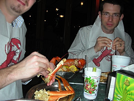
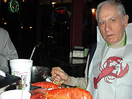
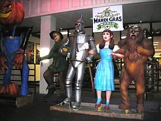
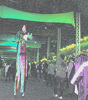
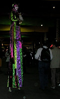

|
Mike Wade (Hiram '04 graduate) works now for Intel. He is on the left. The other fellow was also from Intel. |

Mike attacking that lobster. |

Johnnie attacking the lobster, also. |
|
# Just a glimpse at the exhibits where we spent a fair amount of time. |
A number of SC10 exhibits highlighted climate, heterogeneous computing, and data sharing technologies and applications. |
* A number exhibits highlighted a variety of speakers giving little lectures. |
|

* The end of the conference big party was held at the Mardi Gras World. |

# Woman on stilts at Mardi Gras World. |

Annother shot of the woman on stilts. She had baby shoes on her legs (i.e. stilts), |